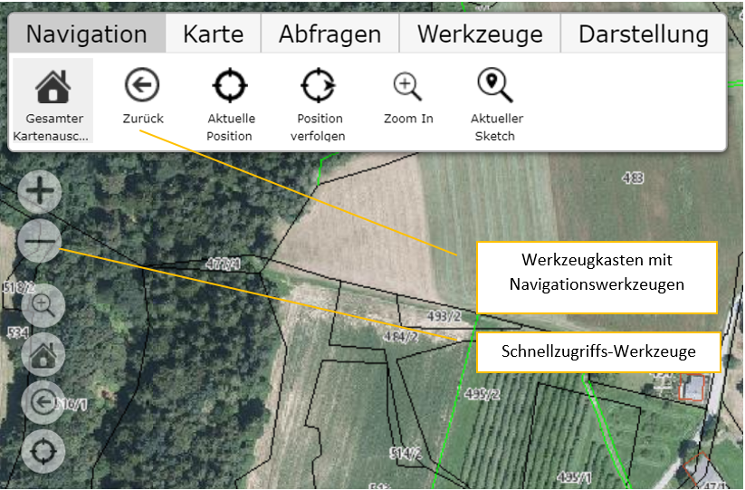

2 Navigation in der Karte¶
Die Navigation in der Karte kann über die Maus (am Desktop) oder mit den entsprechenden Wischgesten (mobile Endgeräte) oder einer Kombination aus beiden erfolgen.
2.1 Navigation mit der Maus¶
Kartenausschnitt verschieben: Dazu muss mit der linken Maustaste in die Karte geklickt und bei gedrückt gehaltener Maustaste die Karte verschoben werden. Durch das loslassen der Maustaste, wird der Vorgang beendet
Kartenausschnitt vergrößern/verkleinern: Diese kann mithilfe des Mausrades erfolgen. Mausrad noch Vorne drehen, verkleinert den Ausschnitt und umgekehrt.
2.2 Navigation mit Wischgesten¶
Kartenausschnitt verschieben: Mit einem Finger die Karte berühren und Ausschnitt verschieben.
Kartenausschnitt vergrößern/verkleinern: Mit zwei Fingern die Karte berühren und die Finger auseinander ziehen, bewirkt eine Verkleinerung des Ausschnittes. Die umgekehrte Geste bewirkt eine Vergrößerung des Ausschnittes.
2.3 Werkzeuge zur Navigation:¶
In einer Karte stehen je nach Möglichkeiten diverse Navigationswerkzeuge im Werkzeugzeugkasten oder bei den Schnellzugriffs-Werkzeugen zur Verfügung.
Die Schnellzugriffs-Werkzeuge befinden sich in der Regel links oben direkt in der Karte (um das Kartenbild nicht zu stören, können diese leicht transparent dargestellt sein):
Bei den Schnellzugriffs-Werkzeugen befinden sich in der Regel eine kleine Auswahl der Werkzeuge, die auch im Navigations-Werkzeugkasten zu finden sind. Der Vorteil ist hier, dass diese Werkzeuge immer sichbar sind. Die Werkzeuge des Werkzeugkastens sind teilweise versteckt. Beispielsweise ist der Werkzeugkasten auf mobilen Geräten mit kleinerem Bildschirm beim Start zugeklappt. Die Schnellzugriffs-Werkzeuge bieten noch zusätzlich eine einfache Möglichkeit mit den +/- Buttons den Kartenausschnitt zu verkleinern bzw. zu vergrößern.
Der Werkzeugkasten hat den Vorteil, dass hier mit dem Werkzeugsymbol auch eine Bezeichnung des Werkzeugs angezeigt wird.
Folgende Werkzeuge stehen unter Navigation zur Verfügung (abhängig von den Einstellungen des Kartenautors):
Gesamter Kartenausschnitt: Mit diesem Werkzeug wird der Kartenausschnitt maximal vergrößert.
Zurück: Hiermit kann nach einem Verschieben oder Zoomen wieder zum letzten Kartenausschnitt zurück gekehrt werden.
Aktuelle Position: Es wird versucht, den Kartenausschnitt auf die aktuelle Position des Anwenders einzustellen. Dies ist abhängig von der Positionsgenauigkeit, die durch ein Endgerät bereitgestellt wird (GPS, …)
Position verfolgen: Auf mobilen Endgeräten ermöglicht dieses Werkzeug, dass der Kartenausschnitt mit der aktuellen Position des Anwenders mitwandert. Auf der aktuellen Position wird ein Pfeilsymbol mit der Fahrtrichtung dargestellt. Im Werkzeugdialog wird die aktuelle Geschwindigkeit angezeigt.
Zoom In: Dieses Werkzeug ermöglicht es dem Anwender, den aktuellen Kartenausschnitt durch das Aufziehen eines „Fensters“ festzulegen. Wählt man dieses Werkzeug aus, kann im nächsten Schritt in die Karte geklickt und bei gedrückter Maustaste ein Fenster aufgezogen werden. Beim loslassen der Maustaste versucht der Kartenviewer den aktuellen Kartenausschnitt bestmöglich an dieses Fenster anzupassen.
Bemerkung
Profitipp: Auf Desktop Geräten mit Tastatur ist das Aufziehen eines Fensters auch immer ohne dieses Werkzeug möglich. Dazu muss mit gedrückter Shift Taste in der oben beschriebenen
Art eine Fenster aufgezogen werden.
Bemerkung
Das aufziehen eines Fenster mit der Shift Taste sollte nicht mit dem aufziehen eines Fenster mit der Strg/Ctrl Taste verwechselt werden. Dabei wird nicht der Kartenausschnitt geändert, sondern die
Kartenobjekte (Grundstücke, Adressen, …) im Fenster abgefragt (siehe Abschnitt Suchen und Abfragen)
Aktueller Sketch: Bei diversen Werkzeugen, die später noch behandelt werden (Messen, Objekte erstellen/bearbeiten), kann ein sogenannter Sketch gezeichnet werden. Dabei handelt es sich um eine Art Umrisszeichnung eines Objektes. Befindet sich in der Karte ein solcher Sketch, wird der Kartenausschnitt mit diesem Werkzeug so eingestellt, dass der gesamte Sketch sichtbar dargestellt wird.